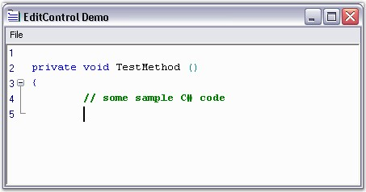
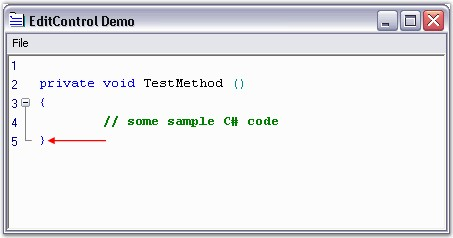

The Edit Control offers autoformatting and smart indentation support for code as in Visual Studio. Currently, only C# has built-in support for this feature.
AutoFormatting can be enabled by using the below given method.
|
Edit Control Method |
Description |
|
AutoFormatText |
AutoFormats given range of text. |
For example, the closing brace gets automatically aligned with the opening brace. Consider some C# code as shown in the below screenshot.

Figure 32: Code is entered into the Edit Control
Now, when the closing brace '}' is typed, it gets automatically aligned with the opening brace, as shown in the screenshot below.

Figure 33: AutoFormatting support for code in Edit Control
 Note: The AutoIndentMode property for the Edit Control should
be set to Smart for this purpose.
Note: The AutoIndentMode property for the Edit Control should
be set to Smart for this purpose.
Essential Edit provides an extensible interface, IAutoFormatter, which can be implemented to provide any kind of formatter for any desired language. This can be used to take care of some of the special scenarios explained below.
· XML or HTML text of the following format - <abc> <xyz> .... </xyz> </abc> should be autoformatted as follows.
|
[HTML or XML]
<abc> <xyz> ... </xyz> </abc> |
· Similarly, when the Edit Control is using C# configuration settings, any text enclosed within '{' and '}' should get automatically indented, just as in the VS.NET editor. Also, the closing brace should be automatically indented with its matching opening brace.
· For languages like VB.NET, the End statement should get automatically indented on pressing the ENTER key, after entering the method header for the VB.NET samples.
|
[VB.NET]
Private sub TestMethod() '----> Method header
'----> Press Enter key
End sub '----> End statement should be automatically aligned with the function header |